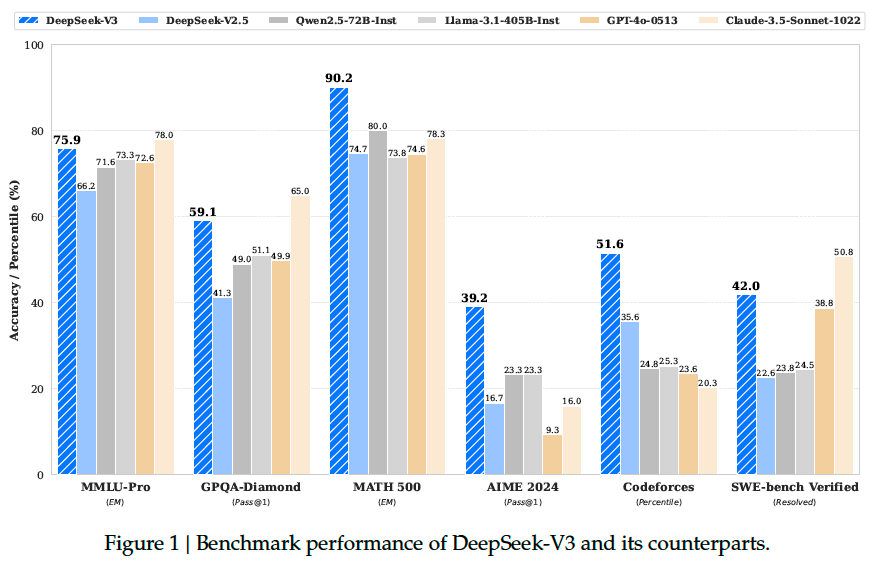
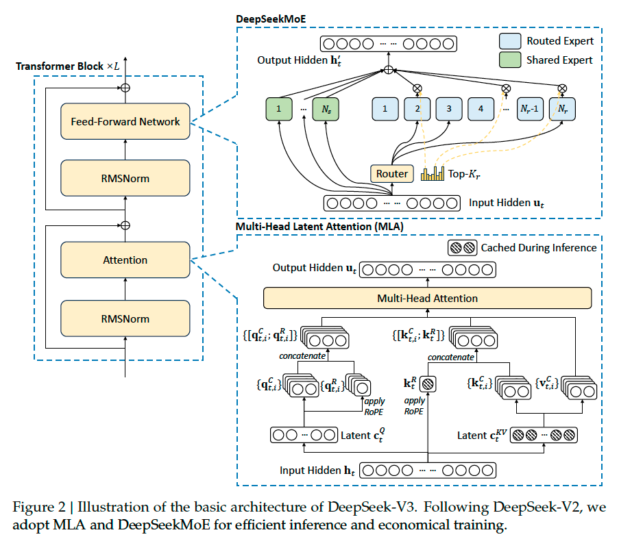
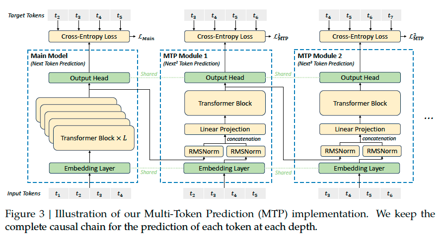

DeepSeek V3#
Note
We present DeepSeek-V3, a strong Mixture-of-Experts (MoE) language model with 671B total parameters with 37B activated for each token. To achieve efficient inference and cost-effective training, DeepSeek-V3 adopts Multi-head Latent Attention (MLA) and DeepSeekMoE architectures, which were thoroughly validated in DeepSeek-V2. Furthermore, DeepSeek-V3 pioneers an auxiliary-loss-free strategy for load balancing and sets a multi-token prediction training objective for stronger performance. We pre-train DeepSeek-V3 on 14.8 trillion diverse and high-quality tokens, followed by Supervised Fine-Tuning and Reinforcement Learning stages to fully harness its capabilities. Comprehensive evaluations reveal that DeepSeek-V3 outperforms other open-source models and achieves performance comparable to leading closed-source models. Despite its excellent performance, DeepSeek-V3 requires only 2.788M H800 GPU hours for its full training.

Architecture#
Basic Architecture#
The basic architecture of DeepSeek-V3 is still within the Transformer framework. For efficient inference and economical training, DeepSeek-V3 also adopts Multi-Head Latent Attention and DeepSeekMoE, which have been thoroughly validated by DeepSeek-V2[DALF+24]. Compared with DeepSeek-V2, an exception is that we additionally introduce an auxiliary-loss-free load balancing strategy for DeepSeekMoE to mitigate the performance degradation induced by the effort to ensure load balance.

Auxiliary-Loss-Free Load Balancing. We introduce a bias term \(b_i\) for each expert and add it to the corresponding affinity scores \(s_{i,t}\) to determine the top-K routing:
Note that the bias term is only used for routing. The gating value, which will be multiplied with the FFN output, is still derived from the original affinity score \(s_{i,t}\). At the end of each step, we will decrease the bias term by \(\gamma\) if its corresponding expert is overloaded, and increase it by \(\gamma\) if its corresponding expert is underloaded, where \(\gamma\) is a hyper-parameter called bias update speed.
Complementary Sequence-Wise Auxiliary Loss. Although DeepSeek-V3 mainly relies on the auxiliary-loss-free strategy for load balance, to prevent extreme imbalance within any single sequence, we also employ a complementary sequence-wise balance loss.
Tip
Complementary Sequence-Wise Auxiliary Loss \(\approx\) Expert-Level Balance Loss in DeepSeekMoE
Node-Limited Routing. Like the device-limited routing used by DeepSeek-V2, DeepSeek-V3 also uses a restricted routing mechanism to limit communication costs during training. In short, we ensure that each token will be sent to at most \(M\) nodes, which are selected according to the sum of the highest \(K_r/M\) affinity scores of the experts distributed on each node.
No Token-Dropping. Due to the effective load balancing strategy, DeepSeek-V3 keeps a good load balance during its full training. Therefore, DeepSeek-V3 does not drop any tokens during training and inference.
Multi-Token Prediction#
We investigate and set a Multi-Token Prediction (MTP) objective for DeepSeek-V3, which extends the prediction scope to multiple future tokens at each position. On the one hand, an MTP objective densifies the training signals and may improve data efficiency. On the other hand, MTP may enable the model to pre-plan its representations for better prediction of future tokens. Figure 3 illustrates our implementation of MTP.

Pre-Training#
Data Construction#
Compared with DeepSeek-V2, we optimize the pre-training corpus by enhancing the ratio of mathematical and programming samples. Also, our data processing pipeline is refined to minimize redundancy while maintaining corpus diversity.
In alignment with DeepSeekCoder-V2[], we also incorporate the Fill-in-Middle (FIM) strategy in the pre-training of DeepSeek-V3.
Long Context Extension#
After the pre-training stage, we apply YaRN: Efficient ContextWindow Extension of Large Language Models for context extension and perform two additional training phases, each comprising 1000 steps, to progressively expand the context window from 4K to 32K and then to 128K. YaRN was specifically applied to the decoupled shared key \(\mathbf{k}_{t}^{R}\) as it is responsible for carrying RoPE[SLP+23].
Evaluation Results#
Post-Training#
Supervised Fine-Tuning#
Reasoning Data. For reasoning-related datasets, including those focused on mathematics, code competition problems, and logic puzzles, we generate the data by leveraging an internal DeepSeek-R1 model. Specifically, while the R1-generated data demonstrates strong accuracy, it suffers from issues such as overthinking, poor formatting, and excessive length. Our objective is to balance the high accuracy of R1-generated reasoning data and the clarity and conciseness of regularly formatted reasoning data.
To establish our methodology, we begin by developing an expert model tailored to a specific
domain, such as code, mathematics, or general reasoning, using a combined Supervised Fine-
Tuning (SFT) and Reinforcement Learning (RL) training pipeline. This expert model serves as a
data generator for the final model. The training process involves generating two distinct types of SFT samples for each instance: the first couples the problem with its original response in
the format of <problem, original response>, while the second incorporates a system prompt
alongside the problem and the R1 response in the format of <system prompt, problem, R1
response>.
During the RL phase, the model leverages high-temperature sampling to generate responses that integrate patterns from both the R1-generated and original data, even in the absence of explicit system prompts. After hundreds of RL steps, the intermediate RL model learns to incorporate R1 patterns, thereby enhancing overall performance strategically.
Upon completing the RL training phase, we implement rejection sampling to curate highquality SFT data for the final model, where the expert models are used as data generation sources. This method ensures that the final training data retains the strengths of DeepSeek-R1 while producing responses that are concise and effective.
Non-Reasoning Data. For non-reasoning data, such as creative writing, role-play, and simple question answering, we utilize DeepSeek-V2.5 to generate responses and enlist human annotators to verify the accuracy and correctness of the data.
Reinforcement Learning#
We employ a rule-based Reward Model (RM) and a model-based RM in our RL process.
Rule-Based RM. For questions that can be validated using specific rules, we adopt a rulebased
reward system to determine the feedback. For instance, certain math problems have
deterministic results, and we require the model to provide the final answer within a designated
format (e.g., in a box), allowing us to apply rules to verify the correctness. Similarly, for LeetCode problems, we can utilize a compiler to generate feedback based on test cases. By leveraging
rule-based validation wherever possible, we ensure a higher level of reliability.
Model-Based RM. For questions with free-form ground-truth answers, we rely on the reward model to determine whether the response matches the expected ground-truth. The reward model is trained from the DeepSeek-V3 SFT checkpoints. To enhance its reliability, we construct preference data that not only provides the final reward but also includes the chain-of-thought leading to the reward. This approach helps mitigate the risk of reward hacking in specific tasks.
Group Relative Policy Optimization
Caution
DeepSeek-Coder-V2 code RM: train a reward model.
DeepSeek-V3 code RM: rule-based RM.
Evaluation Results#
Takeaway#
Note
SFT:
Reasoning data
train a expert model:
SFT: generating two distinct types of SFT samples for each instance. <problem, original response> and R1-generated <system prompt, problem, R1 response>.
RL: During the RL phase, the model leverages high-temperature sampling to generate responses learns to incorporate R1 patterns.
Implement rejection sampling (expert model serves as a data generator) to curate highquality SFT data for the final model.
Non-Reasoning Data: utilize DeepSeek-V2.5 to generate responses.
Reinforcement Learning
For questions that can be validated using specific rules, we adopt a rulebased reward system to determine the feedback (e.g. Leetcode).
For questions with free-form ground-truth answers, we rely on the reward model to determine whether the response matches the expected ground-truth (construct preference data that not only provides the final reward but also includes the chain-of-thought leading to the reward).